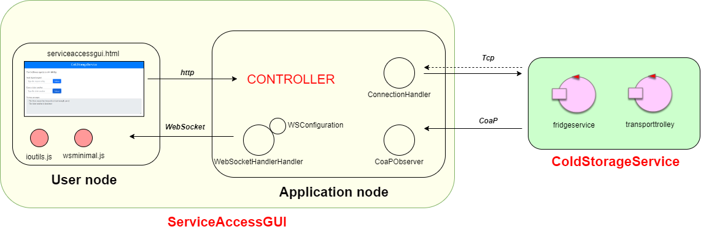

Architettura ServiceAccessGUI prima di Facade24
Questo documento serve solo a mostrare come avrei creato la ServiceAccessGUI come applicazione web in SprinBoot prima di conoscere le nuove funzionalità delle
FACADE.

- WebSocketHandler è il gestore della connessione websocket con il browser. Permette l'invio e la ricezione di messaggi sul canale websocket. Deve essere aggiunto come
handler dell'applicazione dal componente WSConfiguration.
- ConnectionHandler è il gestore delle connessioni con il ColdStorageService: crea la connessione TCP e CoaP e si occupa di inviare e ricevere messaggi via TCP,
che vengono poi inoltrati al client tramite WebSocketHandler.
- CoaPObserver è l'osservatore sulla connessione CoaP. Quando uno degli attori del servizio osservati effettua una updateResource, l'osserver li riceve e li inoltra
al client tramite WebSocketHandler.
- serviceaccessgui.html è il template html attivato dal controller. Contiene campi per inviare richieste di deposito e di consegna del ticket, una label in cui visualizzare il contenuto
della ColdRoom e una textarea in cui visualizzare le informazioni ricevute dal servizio.
- wsminimal.js contiene il codice per la connessione websocket con il server applicativo. All'arrivo di messaggi dal server applicativo li mostra all'utente attraverso la textarea e label del template.
- ioutils.js ocntiene il codice di utilità per aggiornare il contenuto di elementi html della pagina e permette di inviare richieste POST Http al controller.
- Controller è il controller del modello MVC di SpringBoot. Crea i vari componenti dell'applicazione e mostra il template html all'utente nella porta prestabilita. Inoltre contiene
i metodi per la gestione delle richieste che arrivano tramite http dal client. Il controller elabora le richieste e le spedisce al ColdStorageService tramite il Connectionhandler.
{kind=link}